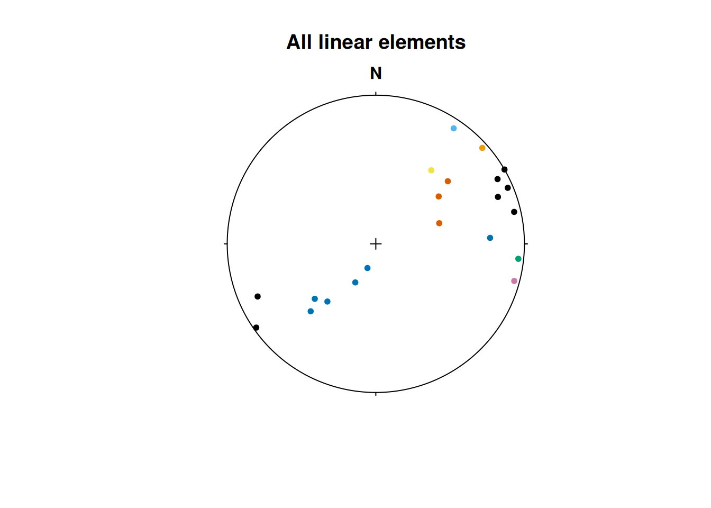
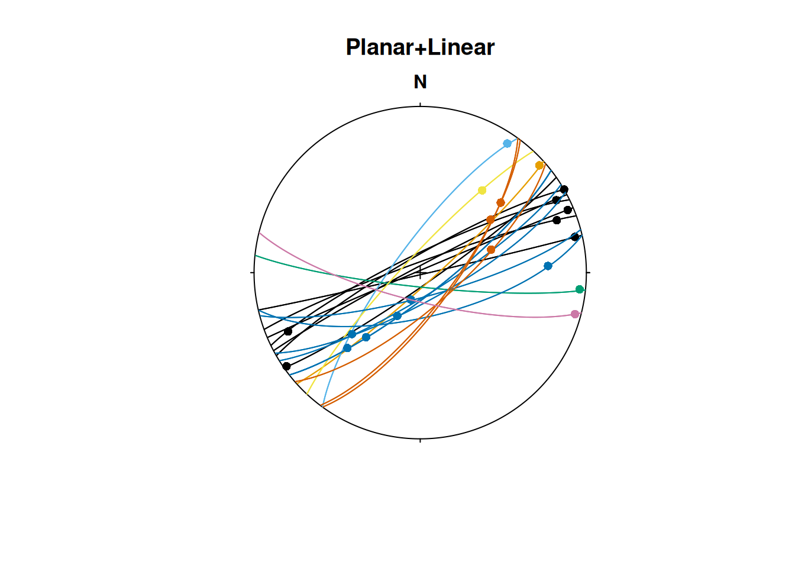
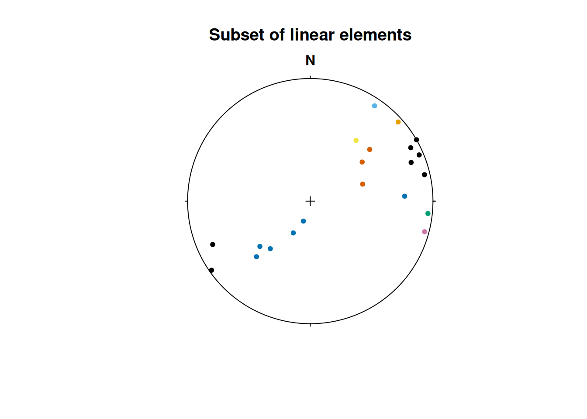

General
Data can be imported with functions already implemented in R such as read.table() and read.csv(), or with functions from other packages (e.g. {readr} and {data.table}). Just make sure that the import produces a matrix or data.frame-like object with each measurement stored in a row, and columns representing dip directions, dip angles, plunge, etc.
For example, your .txt file is tab-separated and may look like this:
| Dip direction | Dip | |
|---|---|---|
| 1 | 120 | 50 |
| 2 | 60 | 12 |
| 3 | 287 | 82 |
You could import the file like this:
imported_data <- read.table(
"path/to/my/file.txt",
header = TRUE,
sep = "\t",
row.names = 1
)Tip
You can also use
file.choose()to open the explorer window and navigate to your file.
This imports the tab-separated file as a "data.frame" object, with the first column used as row names and the remaining two columns named after the table header. Say these measurements represent plane measurements (e.g. bedding or fault plane orientations), we just need to coerce that data.frame into a "Plane" object:
my_planes <- as.Plane(imported_data)If you want a "Line" object, coerce the data.frame using as.Line(). For "Pair" (line-on-plane) and "Fault" (line-on-plane with sense of motion) objects, you’ll need a four- and five-column table, respectively, representing dip direction, dip angle, trend, plunge, and sense. Then use as.Pair() or as.Fault() to parse the object into {structr}.
Note
Note that the dip direction is the preferred notation for plane measurements in {structr} as it unambiguously indicates the orientation using only two parameters.
Some helpers
There are several other conventions for the notation of plane and line orientations from compass measurements. Here are some functions to correctly convert your measurements into the notation required by {structr}.
Right-hand rule
To convert strike measurements into dip directions using the right-hand rule:
strike_measurements <- c(270, 315, 0, 45, 90, 135, 180, 225, 270)
rhr2dd(strike_measurements)
#> [1] 0 45 90 135 180 225 270 315 0
# or from dip direction to strike (using right-hand rule):
dip_directions <- c(0, 45, 90, 135, 180, 225, 270, 315, 360)
dd2rhr(dip_directions)
#> [1] 270 315 0 45 90 135 180 225 270Quadrant notation
Sometimes, strike notation doesn’t follow the right-hand rule. Instead, the quadrant of the dip direction is indicated by a cardinal letter, i.e. “N”, “E”, “S”, and “W”. In that case you can use the function quadrant2dd():
strike_direction <- c(270, 315, 0, 45, 90, 135, 180, 225, 270) # strike (either end of the strike line)
dip_quadrant <- c("N", "E", "E", "S", "S", "W", "W", "N", "N") # dip quadrant
quadrant2dd(strike_direction, dip_quadrant)
#> [1] 0 45 90 135 180 225 270 315 0If your table contains the strike and dip-quadrant measurement in a single column, e.g. “270N”, you can conveniently split the column into two by using split_strike():
split_strike("270N")
#> $measurement
#> 270N
#> 270
#>
#> $direction
#> 270N
#> "N"Fault notation
Fault (and Pair) measurements are usually a combination of Plane and Ray or Line measurements. Then they can be defined using the Fault() and Pair() functions. However, sometimes the Line or Ray component is given by the rake angle, which is the angle between the fault strike and the lineation. Unfortunately, there are several different ways to indicate the proper orientation of the lineation.
Fault plane and rake (or pitch)
This is the standard notation. Here, the rake is the angle between the lineation and the right-hand-rule strike of the fault plane. The angle is measured on the fault plane, clockwise from the strike, where down-plunging is positive. Rake values range between 0 and 360° (or −180° and 180°).
If your data follows this convention, use the function Fault_from_rake():
fault_plane <- Plane(c(120, 120, 100, 0), c(60, 60, 50, 40))
fault_pitch <- c(84.7202, -10, 30, 180)
Fault_from_rake(fault_plane, rake = fault_pitch)
#> Fault object (n = 4):
#> dip_direction dip azimuth plunge sense
#> [1,] 120 60 109.52858 5.958159e+01 1
#> [2,] 120 60 24.96163 -8.649165e+00 -1
#> [3,] 100 50 30.36057 2.252101e+01 1
#> [4,] 0 40 90.00000 1.487542e-14 1Fault plane, rake angle and plunge quadrant
Here, the rake angle is measured in the fault plane between the strike (given by either the right- or left-hand rule) and the lineation. The angle is recorded in a clockwise sense (looking down upon the fault plane) and has a range from 0 to 180°. The quadrant of plunge indicates the direction of the strike from which the rake angle is measured.
If this is the notation used, call the function Fault_from_rake_quadrant() and set type = "plunge":
dip <- c(5, 10, 15, 30, 40, 55, 65, 75, 90)
dip_dir <- c(180, 225, 270, 315, 360, 0, 45, 90, 135)
rake1 <- c(0, 45, 90, 135, 180, 45, 90, 135, 180)
plunge_quadrant <- c("E", "S", "W", "N", "E", "W", "E", "S", "W")
Fault_from_rake_quadrant(Plane(dip_dir, dip), rake1, plunge_quadrant, type = "plunge")
#> Fault object (n = 9):
#> dip_direction dip azimuth plunge sense
#> [1,] 180 5 270.000000 -1.220766e-15 1
#> [2,] 225 10 179.561451 7.053022e+00 1
#> [3,] 270 15 270.000000 1.500000e+01 1
#> [4,] 315 30 4.106605 2.070481e+01 1
#> [5,] 0 40 90.000000 1.487542e-14 1
#> [6,] 0 55 299.837566 3.539626e+01 1
#> [7,] 45 65 45.000000 6.500000e+01 1
#> [8,] 90 75 165.489181 4.307952e+01 1
#> [9,] 135 90 225.000000 7.016709e-15 1Fault plane, rake angle and rake quadrant
Here, the rake is the acute angle measured in the fault plane between the strike of the fault and the lineation. Starting from the strike line, the angle is measured in a sense which is down the dip of the plane. The quadrant of rake indicates the direction of the strike from which the rake angle is measured, i.e. whether the right-hand or left-hand rule is followed. The angle ranges from 0 to 90°. Use the sense argument to specify the sense of motion.
If this is the notation used, call the function Fault_from_rake_quadrant() and set type = "rake":
rake2 <- c(0, 45, 90, 45, 0, 45, 90, 45, 0)
rake_quadrant <- c("E", "S", "S", "E", "E", "W", "N", "S", "W")
Fault_from_rake_quadrant(Plane(dip_dir, dip), rake2, rake_quadrant, type = "rake")
#> Fault object (n = 9):
#> dip_direction dip azimuth plunge sense
#> [1,] 180 5 270.000000 0.000000 1
#> [2,] 225 10 179.561451 7.053022 1
#> [3,] 270 15 270.000000 15.000000 1
#> [4,] 315 30 4.106605 20.704811 1
#> [5,] 0 40 90.000000 0.000000 1
#> [6,] 0 55 299.837566 35.396260 1
#> [7,] 45 65 45.000000 65.000000 1
#> [8,] 90 75 165.489181 43.079517 1
#> [9,] 135 90 225.000000 0.000000 1StraboSpot
The package {structr} can import all the collected field data from your StraboSpot project.
The best way is to import the .json file database of the StraboSpot project. Go to your field data My StraboField Data > scroll down to your project > click on Options… > Download Project in Strabo JSON Format.
Now you can import the downloaded file via read_strabo_JSON():
strabo_data <- read_strabo_JSON("path/to/my/file.json")The import function produces a list object with all the metadata (data), the geographic locations (spots), the used tags (tags), and all the plane (planar) and line measurements (linear) already converted into {structr} data objects.
names(strabo_data)
#> [1] "data" "spots" "tags" "planar" "linear"
plot(strabo_data$linear, col = assign_col_d(strabo_data$data$spot_id))
#> Warning in (function (n) : This manual palette can handle a maximum of 8
#> values. You have supplied 93
title(main = "All linear elements")
The "strabo" objects are list objects containing orientation data as planar and linear objects as well as several slots containing your metadata (data) and geospatial information (spots).
Important
The metadata and the plane and line measurements all share the same row indices. Thus, planes and lines with identical row indices have been measured simultaneously (e.g. as a fault).
Pair(strabo_data$planar, strabo_data$linear) |>
plot(col = assign_col_d(strabo_data$data$spot_id))
#> Warning in (function (n) : This manual palette can handle a maximum of 8
#> values. You have supplied 93
title(main = "Planar+Linear")
Note
This import preserves the connection of simultaneously measured planes and lines (such as faults and their striae). Unfortunately, if you export your StraboSpot field data into a
.csvor.xlsfile, this connection is lost.
Alternatively, the functions read_strabo_xls() and read_strabo_mobile() provide import of .xls and any character-separated table files (e.g. .csv or .txt).
Warning
Keep in mind that these import options do not identify whether your lineation measurements are ray-like or line-like vectors, nor do they combine simultaneous lineation-plane measurements into pairs or faults. Thus, you’ll need to carefully convert these data types after the import to move forward.
Subsetting Strabo objects
One advantage of "strabo" objects is that the orientation data is accompanied with metadata such as GPS coordinates, descriptions etc. This makes it a database which can be filtered, arranged and manipulated using queries the way you want it.
You can subset (or filter) the objects based on columns in any of these list elements, and it returns only the selected rows in all elements of the list, including the orientation data:
strabo_prj_subset <- subset(strabo_data, strabo_data$data$quality > 3)
plot(strabo_prj_subset$linear, col = assign_col_d(strabo_prj_subset$data$spot_id))
#> Warning in (function (n) : This manual palette can handle a maximum of 8
#> values. You have supplied 78
title(main = "Subset of linear elements")
Sort Strabo objects
The function sort_by() can sort your strabo objects based on one or more columns in the data and will automatically sort all planar and linear elements.
sort_by(strabo_data, strabo_data$data$quality)Drill core data
Orientations in drill cores are usually given by α and β angles (lineations on a plane additionally have a γ angle) which describe orientations with respect to the drill orientation. To convert these angles from the “drill core coordinate reference system” to our geographical reference system, you may use the function drillcore_transformation(). Learn more about it in this tutorial.